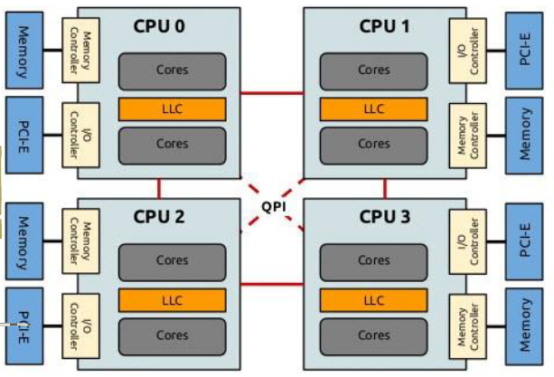

Lecture 6: System and Device Performance
So far, we have mostly focused on CPUs and optimising for CPU performance. However, computer systems have a wide variety of components that can affect performance (memory, OS interfaces, device interfaces, etc.) and we wish to be able to be efficient on all fronts.
Computation and data are inextricable, so the movement of data through a system is crucial. Whether that is via IPC mechanisms, through IO devices or other low-level hardware mechanisms such as cache coherency or virtual address translation, it is important to understand that these all affect the overall performance of computation.
Hardware-related challenges
To get the best performance out of systems, we need to understand the hardware. However, hardware is usually hidden away from software through various layers of abstraction. For example:
Instruction and memory virtualisation
Deployed software often runs in virtualised environments, such as virtual machines or containers. This can lead to the virtual machine trapping into the host OS for different reasons, such as executing certain instructions. This can lead to order-of-magnitude overheads which can negatively affect performance.
A similar situation occurs with virtual memory. All virtual memory addresses need to be translated at runtime into physical addresses through TLBs, which are special hardware caches. This means that address translation is subject to TLB misses, making performance even harder to predict/model. There are dedidcate page walking mechanisms that speculatively prefetch TLB entries by walking through the page table.
If we're inside a VM, then the costs are multiplied because we have "nested" page tables (the virtual OS + the host OS).
Memory tiering
As we have seen many times before, memory is tiered in a hierarchy, with fast and small storage at the top and slow and large storage at the bottom of the pyramid.
Therefore, it is key to reduce misses and utilise caches closer to the CPU as much as possible.
NUMA and CPU access
CPUs are connected to other CPUs through buses. For example, in Intel-based NUMA systems there is a dedicate QuickPath Interconnect (QPI) bus.
In the diagram below, each NUMA node consists of multiple cores and on-die caches, with a dedicated memory controller to access local memory and PCIe port to access I/O devices.
Note that cores on different CPUs can access each other's memory, but this is obviously much slower than access local memory.
In addition, different CPUs can access devices connected to different PCI ports, as well as devices accessing memory.
One feature offered by modern peripherals is PCIe multi-homing. As the name indicates, this means that the same device can be connected to various PCIe ports and maps memory addresses to the PCIe connection.
CPU and device interaction
The traditional modes of CPU-device interaction is via interrupts and memory-mapped I/O (MMIO).
MMIO maps a region of addresses to the PCIe bus on which the device is connected. Every CPU write is sent as data to the device, whereas CPU reads act as a way of receiving data from the device. It is much faster to poll MMIO addresses instead of waiting for interrupts. However, it can lead to high PCIe traffic and latency (around 1μs, which is much slower compared to RAM and cache).
I/O interfaces
Let us look at the different I/O interfaces offered by most operating systems (in particular, Linux).
Blocking I/O is the default behaviour for the traditional system calls (open, close, read, write, ...) as it is simple to use and understand. However, it is a blocking operation and is expensive:
- Trap into kernel model on syscall
- Copy user data into kernel
- Block and reschedule thread if I/O operation not available
- Copy kernel data into user space
A more efficient approach can be taken via non-blocking I/O APIs and generally has two flavours:
-
Asynchronous (designed for storage I/O):
- Setup the I/O operation(s) with a syscall
- Do something else
- Kernel signals the end of the syscall
- React to the end of the syscall
-
Events (designed for network I/O):
- Tell kernel what operation we want to perform on a file descriptor
- Do something else
- Kernel signals when the operation is available
- Operate on the file descriptor
Linux: asynchronous I/O
Useful when we want to execute something else while disk file is being read or written.
-
Submit a list of operations:
io_submit(aio_context_t ctx_id, long nr, struct iocb** iocbpp) -
Wait for events to complete:
io_getevents(aio_context_t ctx_id, long min_nr, long nr, struct io_event *events)
There are other operations to setup and cancel a list of operations.
Linux: event-based I/O (with epoll)
Useful when we want to execute something else while there is no data to read from a network socket.
Linux offers the epoll API which is efficient and easy to understand, as it has evolved from select and poll. You first register the file descriptor for the reading/writing poll set and then wait for any of the fds in such sets to be ready:
-
Register a file descriptor into the read/write poll set:
epoll_ctl(int epfd, int op, int fd, struct epoll_event *event) -
Wait for any fd to be ready:
epoll_wait(int epfd, struct epoll_event *events, int maxevents)
There are other operations to setup and cancel a list of operations.
Note: you must first set the FDs to use non-blocking I/O using fcntl and the O_NONBLOCK flag.
Linux: io_uring
The io_uring API covers both storage and network non-blocking operations. It works by setting up a request and response queue which is shared between the process and kernel. Queues can be manipulated and polled in user-level code, meaning that no syscalls are required to check if a response is ready. In addition, it facilitates zero-copy because the queue's memory is shared.
Direct device access
As we have seen, performing I/O operations through the OS can be expensive. The next extreme would be to directly access hardware from user space and completely bypass the OS kernel. User code can use specialised libraries and protocols to access devices which are memory-mapped into the process' memory.
Examples of this are DPDK for network I/O and SPKD for storage I/O.
Design patterns for I/O programming
This section covers some of the now obselete and more modern approaches to I/O programming for servers.
One thread per task (obsolete)
- Main thread listens for new connections
- A new connection is accepted
- Spawns a new thread to handle the new connection
- The new thread does all blocking operations (read from socket, execute logic, read/write disk, write to socket).
Single thread pool (obsolete)
The only difference with the previous approach is that we use a thread pool and recycle threads for each new connection, rather than spawning a new one. This eliminates the cost of thread creation and does not process new connections if the thread pool is exhausted.
Separate thread pools
Here, we maintain a separate thread pool for long operations (blocking I/O). We keep the main thread busy with short operations and hand-off I/O to worker threads.
- Receive and process the request in the main thread
- On a potentially long (blocking) operation, enqueue the socket fd to the worker queue
- Workers poll the input queue
- One worker takes the fd and executes the descriptor (eg: disk read)
- Worker pushes the response back to main thread's queue
- The main thread continues working using the response
This is typically achieved using callbacks: the main thread function continues after the I/O worker is done.
Event-based systems
These are designed for high throughput and low latency servers. We have many threads that operate on the same epoll/AIO context. This is typically implemented as a state machine that transitions across incoming events.